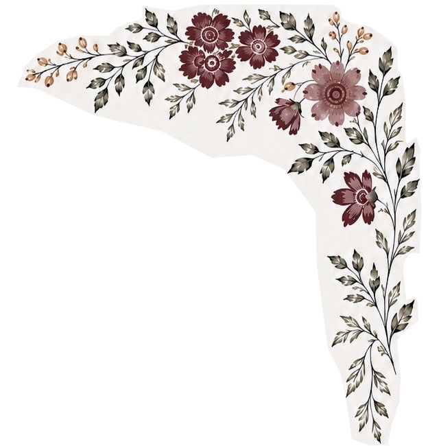
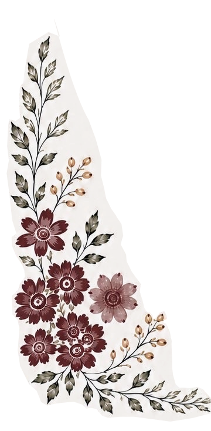

Brenda and Wayne
SHARE YOUR PHOTOS FROM THE DAY
However you captured today — a portrait, a candid, a blurry dance-floor shot — we'd love to see it. Tap below to add your photos, no account needed.
Brenda & Wayne
Enter the code from your invitation card to continue


Brenda and Wayne
SHARE YOUR PHOTOS FROM THE DAY
However you captured today — a portrait, a candid, a blurry dance-floor shot — we'd love to see it. Tap below to add your photos, no account needed.